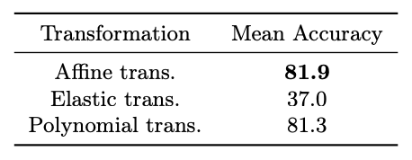

Pre-training and transfer learning are an important building block of current computer vision systems. While pre-training is usually performed on large real-world image datasets, in this paper we ask
whether this is truly necessary. To this end, we search for a minimal,
purely synthetic pre-training dataset that allows us to achieve performance similar to the 1 million images of ImageNet-1k. We construct
such a dataset from a single fractal with perturbations. With this, we
contribute three main findings. (i) We show that pre-training is effective
even with minimal synthetic images, with performance on par with largescale pre-training datasets like ImageNet-1k for full fine-tuning. (ii) We
investigate the single parameter with which we construct artificial categories for our dataset. We find that while the shape differences can be
indistinguishable to humans, they are crucial for obtaining strong performances. (iii) Finally, we investigate the minimal requirements for successful pre-training. Surprisingly, we find that a substantial reduction of
synthetic images from 1k to 1 can even lead to an increase in pre-training
performance, a motivation to further investigate “scaling backwards”. Finally, we extend our method from synthetic images to real images to
see if a single real image can show similar pre-training effect through
shape augmentation. We find that the use of grayscale images and affine
transformations allows even real images to “scale backwards”. The code
is available at link
.
Pre-training with a Single Fractal (1p-frac)
Fig. 2: Scaling backwards from many images to a single synthetic image. (a) Empirical
distribution \( p_{\text{data}} \). Colors indicate classes. With a single image, the distribution is
given by a single Dirac’s delta function. (b) LIEP distribution \( p_{\Delta} \) The support of
the distribution narrows as the degree of perturbation ∆ decreases. (c) σ-factor for
investigating fractal shapes. A small σ produces complex fractals.
We propose 1p-frac to explore a minimally composed pre-training dataset. (The image examples are shown in Fig.2.) 1p-frac is a dataset consisting of fractal images generated from iterated function systems (IFS), and it reduces the number of fractals in order compared to conventional datasets such as FractalDB and One-instance FractalDB (OFDB).
FractalDB is a dataset composed of 1M images and 1k categories, while OFDB consists of 1k images and 1k categories. The empirical distribution of these datasets is shown in Figure (a).
On the other hand, 1p-frac consists of a single fractal and its perturbations, which are learned using the Locally Perturbed Cross Entropy (LPCE) loss. To control a single fractal in this case, we introduce the σ-factor and perform analysis on minimal pre-training.
For more details, please refer to the main text.
Can 1p-frac provide a pre-training effect comparable to conventional datasets?
Pre-training with 1p-frac.
Table 2 compares 1p-frac with FracdalDB (1M
images, 1k categories) and OFDB (1k images, 1k categories). As can be seen, the
pre-training effect of 1p-frac is comparable to that of FractalDB and OFDB.
The number of fractal categories is significantly reduced from C = 1,000 to only
1.
Table 2: Comparison of
1p-frac with FractalDB
and OFDB. ⋄
indicates
the use of LPCE loss. We report top-1 accuracies (%).ImageNet-1k fine-tuning.
While this work discusses minimal requirements for visual pre-training, increasing the approximation precision of the
numerical integration could further improve the performance and benefit training of large models. In Table 8, we applied the LPCE loss with L = 21,000 to the
ViT-B model and compare fine-tuning accuracy on ImageNet-1k. Surprisingly,
and despite using a single fractal as data, our ViT-B pre-trained on 1p-frac
outperforms pre-training on ImageNet-21k. This shows the strength of our approach in particular because we simply keep the same fine-tuning protocols as
used for the original Imagenet-21k to ImageNet-1k transfer,
putting us at a potential disadvantage.
Table 8: Comparison of pre-training datasets
on ImageNet-1k fine-tuning. Fine-tuning accuracies
calculated by using ViT-Base (B) are listed in the
table. 21k indicates the number of categories in each
pre-training dataset.
Experiments on why pre-training works with 1p-frac
Experiment on perturbation degree.
Table 5 shows the results obtained by different perturbation degrees ∆ for the LIEP distribution. The results indicate that setting the value to 0.1 yields the highest performance. Interestingly, the performance significantly improved when ∆ was increased from 0.01 to 0.05.
This suggests that the support of the empirical distribution must have a certain size to obtain positive pre-training effects.
Table 5: Effects of perturbation degree ∆ (σ = 3.5).
These images are perturbation degree ∆ samples.
Experiment on σ-factor.
Table 6 investigates the effects of the σ-factor, which measures the
complexity of fractal shapes. As can be seen, the most complex shape yields the
highest performance. It is worth noting that, even with a fractal of σ = 6.0,
which looks like Gaussian noise, we observed positive pre-training effects. This
suggests that the shapes obtained from IFS are crucial for pre-training.
Table 6: Effects of σ.
These images are perturbation degree ∆ samples.
Experiment on numerical integration.
Tables 7 reduces the number of sampling points L
of the numerical integration when approximately computing loss.
We see that larger numbers result in high performance. Interestingly, even with
L = 16, the pre-training effect was positive (better than training from scratch).
Table 7: Effects of number of sampling points L
for numerical integration.
Pre-training with a single real image and shape augmentation.
It was found that pre-training effects comparable to
a dataset of one million realworld images can be achieved
with 1p-frac, but is it possible to perform pre-training
similarly with a real image?
In this section, we verify whether visual features can be acquired through pre-training using a single real image (each image in Figure 5) with the LPCE loss using image representations similar to FDSL (Canny images) and geometric transformations for perturbation
({affine, elastic, polynomial} transformations in Figure 4).
Fig. 4: Shape augmentation with three geometry
transformations from a single real image.Fig. 5: The five different images used in the pre-training with a single real image and
shape augmentation.
The results of pretraining effects with L = 1, 000 are shown in Tables 11 and 12.
Note that the results in these tables represent the average score on C100 over the five real
images in Figure 5. See the supplementary material for results for each of image. According to the results, we find that contour-emphasized Canny images
omitting color information and affine transformation perturbation yield better
pre-training, as measured by the fine-tuning accuracies.
The operations are similar to the classification of labeled fractal images via IFS.
Table 11: Comparison of pre-training
effect between RGB and Canny images
when shape augmentation is applied. The
shape augmentation uses affine transformations.
Table 12: Comparison of pre-training effects of affine, elastic, and polynomial image transformations. Real Img type with
Canny applied to the images.

Linear probing.
To compare supervised ImageNet-1k pre-training
with our 1p-frac pre-training in the context of early layer visual representations,
we executed a linear probing experiment on the C100 dataset. In the ViT-T
model with {1, 2, 3} layers, the 1p-frac pre-trained model outperformed the
model pre-trained on ImageNet-1k. This demonstrates the superior quality of
early, low-level representations learned from our dataset compared to ImageNet.
In effect, layers up to layer 3 in ViT-T can be sufficiently pre-trained and frozen
using our 1p-frac.
Fig. 3: Linear probing following the experiments. We verified the performance
with {1, 2, 3, 4, 6} layers in the ViT-Tiny model
on C100 dataset. Here, 2 and 4 show the use of
up to 1–2 and 1–4 layers.
Citation
@inproceedings{Nakamura_2024_ECCV,
author = {{Ryo Nakamura and Ryu Tadokoro and Ryosuke Yamada and Yuki M. Asano and Iro Laina and Christian Rupprecht and Nakamasa Inoue and Rio Yokota and Hirokatsu Kataoka},
title = {Scaling Backwards:Minimal Synthetic Pre-training?},
booktitle = {Proceedings of the 2024 European Conference on Computer Vision (ECCV)},
month = {October},
year = {2024}
}
This work is based on results obtained from a project, JPNP20006, commissioned by the New Energy and Industrial Technology Development Organization (NEDO).
This work was supported by JSPS KAKENHI Grant Number JP19H01134.
Computational resource of AI Bridging Cloud Infrastructure (ABCI) provided by National Institute of Advanced Industrial Science and Technology (AIST) was used.